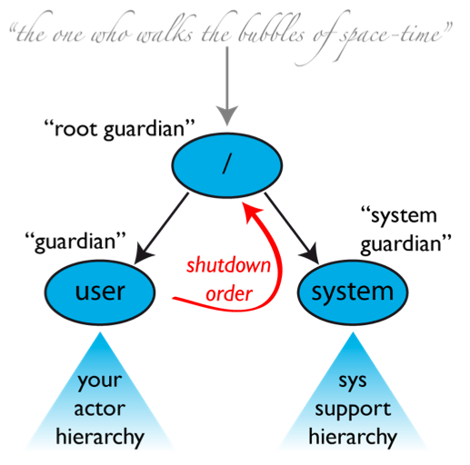

声明：本文主要内容来源于Akka官方网站的Akka Scala Documentation文档。
Actor的Best Practice
在文档16页，给出了Actor的Best Practice，包括：
- Actor应是一个好的协作者；
- 不要在Actor之间传递可变对象；
- Actor是行为与状态的容器；这意味着状态与行为应封装在Message中；
- 顶级Actor是Error Kernel最内部的一部分，这有利于错误处理。
Actor
17页定义了Actor：
An actor is a container for State, Behavior, a Mailbox, Children and a Supervisor Strategy.
Actor对象可以分为内部与外部，外部以引用方式传递。这使得我们可以重启Actor而无需更新任何地方的引用（这是指内部的重启）；可以将实际的Actor对象放在远端主机；可以发送消息给完全不同应用程序的Actor。
Actor状态可以是显式的状态机（例如使用FSM模块）或者计数器、一组侦听器、待处理的请求等。从概念上讲，每个Actor都拥有属于自己的轻量级线程，保护它不会被系统的其余部分影响。我们在编写Actor时，就不用担心并发。
每个Actor都有一个(恰好一个)Mailbox，所有Sender会将消息入队到Mailbox中。入队的顺序按照消息发送的时间顺序。Mailbox有多种实现，默认为FIFO。但也可以根据优先级考虑出队顺序，实现算法则不相同。
AKKA与其他Actor模型不同的是：当前的行为总是会处理下一个出队的消息，而不会去扫描Mailbox，获得下一个匹配的消息。因此，当处理消息失败，就会认为是失败，除非这个行为被重写了。
每个Actor都是一个潜在的Supervisor：如果该Actor创建了一个Child去执行子任务，就会自动来管理这些Child。Children的列表放在Actor的Context中，Actor可以访问他们。创建或停止的操作分别为：
Liquid error: invalid byte sequence in US-ASCII
看起来，这种变更会实时反映出来；但事实上是以异步的方式在后台执行，它并不会阻塞Supervisor。
Supervisor处理失败场景的策略在创建Actor时就被确定，因而在Actor创建之后不能改变。一个Actor只有一个策略，因此，如不同的策略被运用到Actor的不同Child，就会被分组，会按照策略去匹配Supervisor，而非构建时的分类。
一旦Actor被终止，就会释放资源。在其Mailbox中的消息会被转发给系统的“dead letter mailbox”；然后该Mailbox会被替换为系统的Mailbox。所有新发来的消息也会作为Dead letter转发到系统的Mailbox。可以向Event Bus注册一个TestEventListener，监听dead letter的转发。这样就可以对错误写日志。
Supervision
Supervisor会将任务委派给下级（subordinate），并能响应这些下级的失败。若下级侦测到失败（例如抛出异常），就要暂停它自身以及它的所有下级，并发送消息给它的Supervisor，以标识该失败。这时，Supervisor有四种选择：
- 重新获得（Resume）下级，并保持其累加的内部状态；
- 重新启动（Restart）下级，清除其累加的内部状态；
- 永久地终止下级；
- 扩大（Escalate）失败，从而使得自身也失败。
重要的一点是要认识到一个Actor就是Supervision层次的一部分。
对于Actor类的hook方法preRestart()默认行为是在重启（restarting）之前，是终止所有的children（这个过程是递归的）。但是，该方法可以被重写。
Top-Level Supervisors
一个Actor系统在创建之初，至少有三个Actor，如下图所示：

1.The Guardian Actor
它是用户创建的Actor的parent，命名为“/user”。使用system.actorOf()方法创建的Actor都是它的children。这意味着只要这个Actor终止了，系统中所有常规的Actor都会被关掉。在Akka 2.1中，可以设置Supervisor Strategy，配置项为akka.actor.guardian-supervisor-strategy，对应类名为SupervisorStrategyConfigurator。倘若这个Guardian Actor扩大了失败，按照前面描述的Supervisor策略，它会使得root guardian终止该Actor，从而使得这个Actor下的所有子Actor都停止，即关掉了整个Actor系统。
2.The System Guardian
名为“/system”。主要是为了在常规Actor被终止时，做到按序的shut-down顺序。它可以监控User Guardian。可以管理Top-Level的System Actor采用一种策略，可以在除了ActorInitializationException与ActorKilledException之外的异常出现时，无限制地重启它。
3.The Root Guardian
由于每个真正的Actor都有一个supervisor，因此，root guardian的supervisor不是一个真正的Actor。
当出现如下三类失败错误时，就可能Restart Actor：
- 在收到特定消息时，发生系统错误，如编程的错误；
- 在处理消息时，因为一些外部资源的原因出现错误；
- Actor的内部状态出现问题
Restart的过程：
- 暂停Actor（这意味着在Restart期间，不会处理常规的消息，直到它被Resume）。同时，还会递归地暂停所有的children；
- 调用旧实例的preRestart钩子方法（默认情况下，会发送终止消息给所有children，调用children的postStop()）。
- 等待所有的children被终止（调用context.stop()）。这个过程是非阻塞的；
- 通过调用原来提供的工厂去创建新的Actor实例；
- 调用新实例的postRestart()方法（默认情况下，仍然要先调用preStart()）；
- 将restart的请求发送给执行第3步时没有被kill掉的children；然后遵循第2步递归地对children执行restart；
- resume actor。
Lifecycle Monitoring
对于Monitoring而言，能监控的状态就是alive到dead之间的迁移。因此，在Akka中，Lifecycle Monitoring指的就是DeathWatch。Monitoring主要指的是监控其他的Actor，而非Supervision层次中的Actor。
监控的Actor（Monitoring Actor）如果接受到一条Terminated消息，默认行为就会抛出DeathPactException。要侦听Terminated消息，可以调用ActorContext.watch(targetActorRef)；停止监听则调用ActorContext.unwatch(targetActorRef)。
如果Supervisor不能简单地重启其Children，又必须终止他们，例如在初始化Actor时出现了错误，就可以使用Monitoring。此时，可以侦听这些children，然后重新创建他们，或者安排时间重试。
使用Monitoring的另一种常见情形是，在缺乏外部资源，且该外部资源属于该Actor的一个children，Actor需要失败。如果第三方通过system.stop(child)或者发送PoisonPill去终止child，supervisor就会受到影响。


 米沃什在《被禁锢的头脑》中，描述了战时东欧的白色恐怖：
米沃什在《被禁锢的头脑》中，描述了战时东欧的白色恐怖：


 * 多数操作仅添加数据
* 多数操作仅添加数据